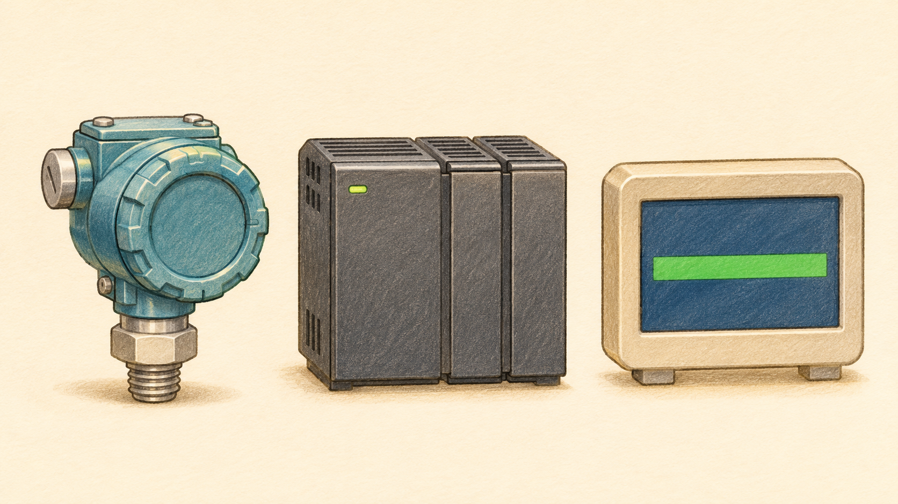
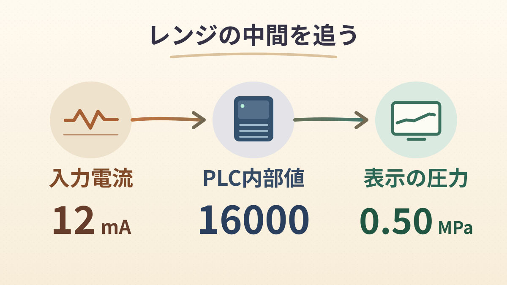

この記事が向いている人
- アナログ入力の基本を初めて整理したい人
- 4-20mAや0-10Vが何を表すのか知りたい人
- PLCで数値として読む入力の見方を知りたい人
ノイズ対策を全体から切り分けたいとき
この項目だけで原因を決めず、制御盤のノイズ対策・誤動作の切り分けガイドで、発生源・伝搬経路・影響を受ける機器の順に整理できます。
この項目だけで原因を決めず、制御盤のノイズ対策・誤動作の切り分けガイドで、発生源・伝搬経路・影響を受ける機器の順に整理できます。
PLCのアナログ入力は、機器から来る電流・電圧の大きさを数値に変える入力です。
PLCに届くのはMPaそのものではありません。変換器が圧力を電流や電圧で伝え、PLCの入力ユニットがそれを内部値に変換します。圧力・温度・流量などを画面に出すには、内部値を実際の単位に換算します。


後輩圧力スイッチでも、圧力が足りているかは分かりますよね？

先輩そうだね。「設定値を超えたか」で十分ならON/OFF入力。「今は何MPa？」まで知りたいときは、圧力変換器の信号をアナログ入力で読むんだ。
向きをPLCから見て決めると混乱しません。現場の値がPLCへ入るならアナログ入力（AI、A/D）、PLCから連続量の指令を出すならアナログ出力（AO、D/A）です。信号が4–20 mAや0–10 Vでも、値の向きが逆なら同じ役割ではありません。
| PLCの機能 | 値の向き | たとえば |
|---|---|---|
| ON/OFF入力 | 機器 → PLC | 圧力スイッチが設定値を超えたことを知る |
| アナログ入力（AI） | 機器 → PLC | 圧力変換器から今の圧力を読み取る |
| アナログ出力（AO） | PLC → 機器 | インバーターに速度指令を送る |
たとえば三菱電機 MELSEC iQ-Rでは、R60AD4は読む側（A/D）、R60DA4は送る側（D/A）です。型式の見た目だけで判断せず、仕様の「アナログ入力／出力」を確認します。
例として、0～1.00 MPaを4～20 mAで出す圧力変換器を、三菱電機R60AD4の4～20 mA通常レンジで読む場合を考えます。公称の対応を、下限・中間・上限の3点で見てみます。

工程値 ＝ 工程下限 ＋（内部値 − 内部下限）÷（内部上限 − 内部下限）×（工程上限 − 工程下限）。この例では、16000 ÷ 32000 × 1.00 MPa ＝ 0.50 MPaです。センサの測定範囲やユニットのレンジが変われば、式に入れる上下限も変わります。
ユニットのスケーリング機能を使っている場合は、PLCプログラムや表示器側で同じ換算を重ねないようにします。異常を判定したときは、範囲内に丸めた工程値だけで正常と判断せず、診断状態も確認します。
4–20 mAは電流で値を伝え、0–10 Vは基準との電位差で値を伝えます。まず送る機器の出力方式とレンジ、受けるユニットの入力方式とチャンネル設定、結線図の3点を照合します。
4 mAは測定範囲の下限です。0 mAは通常の測定範囲内ではありませんが、断線のほか、ループ電源の喪失などでも起こり得ます。PLCの表示が「0」というだけで、電流が0 mAとは限りません。
0 Vは正常な下限になり得るため、0 Vだけで断線と判断できません。共有する基準電位や配線経路など、送信側と入力側の条件を仕様に沿って確認します。
例えば同じR60AD4で4–20 mA信号を誤って0～20 mAレンジに設定すると、理論上4 mAは内部値6400、12 mAは19200です。実際の信号が正しくても換算結果にズレが出るので、スケールを調整する前にレンジを確認します。
画面の値だけでは原因を決められません。まず、今見ているのが電気信号、A/D変換後の内部値、換算後の工程値のどれかを確認します。
後輩画面が0 MPaなら、電流が来ていないんですか？
先輩そうとは限らないよ。さっきの例では正常な下限でも4 mAが流れる。画面の数値だけで断線と決めず、PLCの値と診断状態を見よう。
R60AD4では、指定の拡張レンジと検知方法を組み合わせた簡易断線検知があります。入力信号異常の検知中、該当チャンネルは異常検出直前のデジタル出力値（A/D変換後の値）と演算値を保持する仕様なので、数値が残っていても診断状態を別に見る必要があります。設定条件・対応状況は機種や版の資料で確認します。すべてのPLCで同じ検知方法・しきい値が使えるわけではありません。
設備の停止、電源の遮断、再投入防止と無電圧確認など、現場の手順に従います。運転中に配線を外す、未確認の端子を短絡する、保護を無効にして試すことはしません。機器をつなぐときは、設置機器の公式結線図を使います。
最終内容更新：
公式資料確認日：